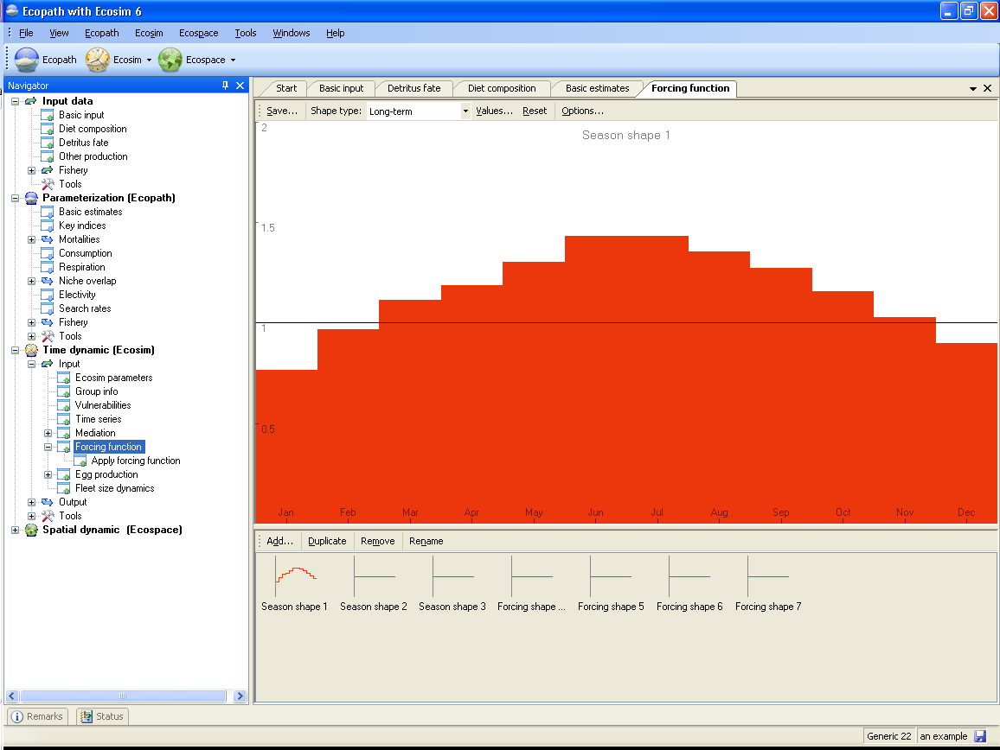
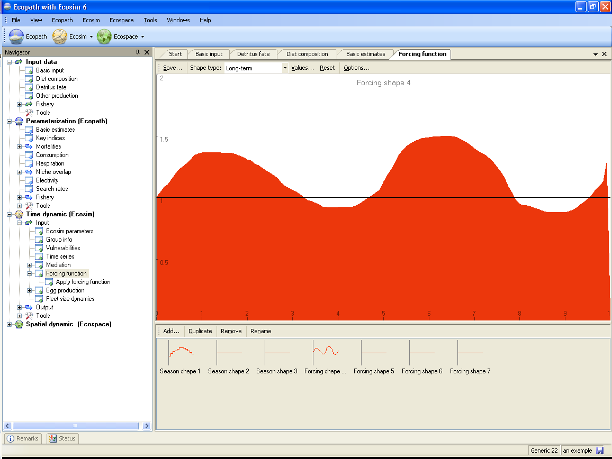
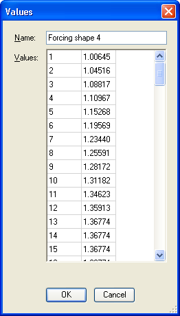

As presently conceived Ecosim does not incorporate the interactions between the components of the food web defined by the underlying Ecopath file, and physical or other environmental factors affecting the ecosystem thus described. Ecosim, like Ecopath, describes only feeding interactions. Ecosim does, however, contain a routine to allow a ‘forcing function’, which may represent physical or other environmental parameters, to influence these trophic interactions. These forcing functions, which can be used to modify the Q/B ratio of the consumer groups included in an underlying Ecopath file (see Linking mediation and time forcing functions to trophic interaction rates). You can also use a forcing function to force primary production directly (see Primary production in Ecosim. Forcing functions in Ecosim are of two types:
There are three default seasonal forcing functions. Their default setting is uniform (no seasonal forcing). However, sinusoid or other shapes can easily be sketched in, with, e.g., a maximum in summer and a minimum in winter (see below for instructions). You can also add extra seasonal shapes (see Add... below).
Each seasonal shape may be different. It might be appropriate to use highly variable shapes for ‘fast groups’ (usually small organisms) and shapes with low amplitude for slow groups (usually large, long-lived organisms).
The long-term shapes are similar to the seasonal shapes, except that their time scales refer, as the name implies, to a year period equal to the duration of the simulation (calculated with monthly time steps). If your time series has annual time steps, Ecosim will use the same value for each month in the year. Such shapes may be used to represent e.g., decadal regime shifts, such as occur in the North Pacific. By default only one long-term (‘forcing’) shape is activated but addition long-term shapes can be added (see Add... below).
Important note: after you have defined forcing shape(s) as described below, you must continue to one of the Apply forcing function forms (Apply FF (consumer) or Apply FF (primary producer) ) to set the groups affected by the forcing function. This step is essential as your long-term forcing or seasonal functions cannot be applied without it.
There are a number of ways to define forcing shapes in Ecosim. First, forcing functions can be read in as time series from a csv file using the Import time series on the Time series form or the Ecosim menu. Set the ‘data type’ to 2 in the csv file. Note the series must be activated using the Time series form.
Alternatively, you can define a forcing function using the Forcing function form (Time dynamic (Ecosim) > Input > Forcing function). Note you must have an Ecosim scenario loaded before you can open this form.
When you open the Forcing function form for the first time, you will see four ‘blank’ forcing shapes (three seasonal shapes and one annual forcing shape), each with constant default value of 1.0. If there is currently a data file activated containing one or more time series of data type 2, these will also be displayed.
To define a forcing shape using the Forcing function form, first select one of the ‘blank’ shapes in the lower pane. Be sure to select a ‘Seasonal shape’ for monthly data or a ‘Forcing shape’ for long-term data. You can then define forcing shapes in one of three ways:
Shapes can be drawn freehand using the red sketch pad. If you have selected a Seasonal shape, the X-axis will appear as the months January to December and your sketch will be drawn in monthly blocks (Figure 8.15a). If you have selected an annual Forcing shape, the X-axis will be shown as Years 1-100. The sketch will be smooth (Figure 8.15b). You will see your sketched shape transferred to the selected shape in the bottom pane;
Alternatively, you can use standard mathematical shapes. Click Options… at the top of the Forcing function form to open the Options dialogue box. Select Shape from the menu on the left of the dialogue box (Figure 8.16a) to see a list of standard shapes (e.g., linear, sigmoid, exponential, ...). You can tailor the shape to your specific requirements by setting the Y Zero, Y End, Y Base and Steepness parameters (as applicable) in the cells provided. Select Options from the menu on the left of the dialogue box for display settings (Figure 8.16b).
You can also type in values directly by clicking on Values… at the top of the Forcing function form. This will open a dialogue box where you can type in the Y values of the forcing shape into the cells in the left-hand column of the form. Indices of the X values (months) are already given in the right-hand column of the form (Figure 8.17).
Note that if you have defined the seasonal or long-term forcing shape using methods (i) or (ii) the Values dialogue box will also act as an output and display these values.
Clicking the Reset button at the top of the Forcing function form resets the current forcing or seasonal shape to the default constant value of 1.0.
Clicking the Save… button at the top of the Forcing function form opens a dialogue box prompting you to save the current forcing shape to a bitmap file (.bmp). Use this dialogue box to name the file and browse for a location to save it.
Sets whether the selected shape is a seasonal or long-term forcing shape.
There are four additional menu items on the bottom pane of the Forcing function form that allow you add, copy, rename and delete forcing or seasonal shapes.
Adds an extra blank long-term forcing shape. If necessary, use Shape type to change the long-term forcing shape to a seasonal shape.
Copies the currently-selected shape.
Removes the currently-selected shape.
Rename the currently-selected shape by selecting Rename. You will then be able to type in a new name for the shape.





Figure 8.17.